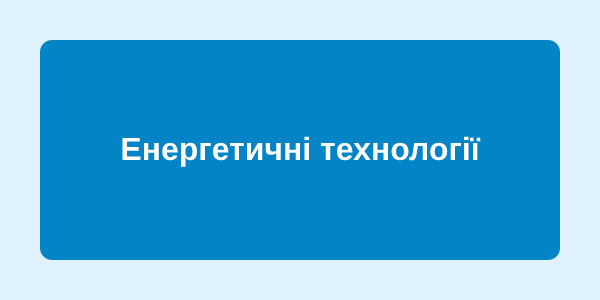

1. Енергетичні технології та відновлювана енергетика

Опис напряму: Розробка високоефективних сонячних електростанцій, модернізація промислових підстанцій та впровадження інтелектуальних систем накопичення електроенергії (Smart Grid).
Зв’язок з державними органами: Проєкт реалізується відповідно до Національного плану з відновлюваної енергетики у партнерстві з Міністерством енергетики України та Державним агентством з енергоефективності.